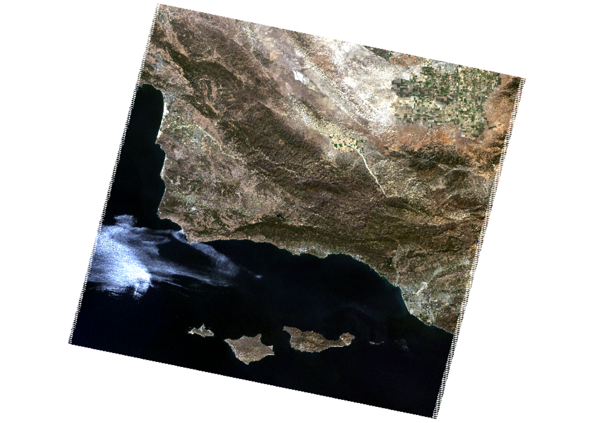
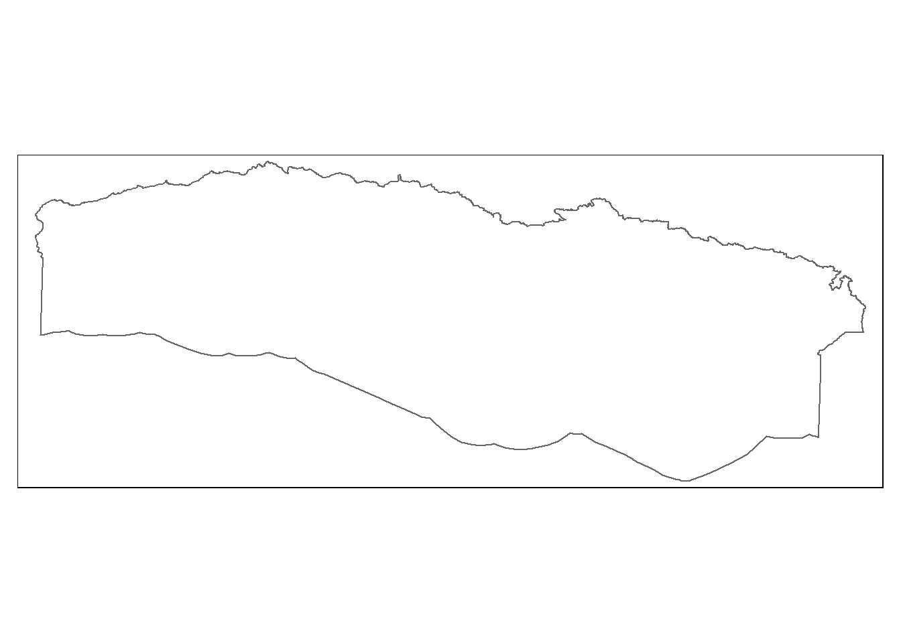
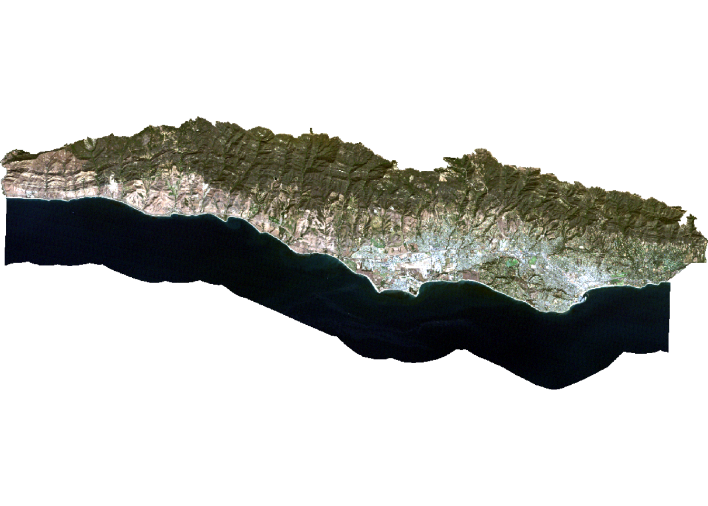

── Conflicts ────────────────────────────────────────── tidyverse_conflicts() ──
✖ tidyr::extract() masks terra::extract()
✖ dplyr::filter() masks stats::filter()
✖ dplyr::lag() masks stats::lag()
ℹ Use the conflicted package (<http://conflicted.r-lib.org/>) to force all conflicts to become errors
library(rpart) # recursive partitioning and regression trees
Warning: package 'rpart' was built under R version 4.4.2
library(rpart.plot) # plotting for rpart
Warning: package 'rpart.plot' was built under R version 4.4.2
library(tmap) # map making
Breaking News: tmap 3.x is retiring. Please test v4, e.g. with
remotes::install_github('r-tmap/tmap')
Load landsat data
# Import filesfilelist <-list.files(here::here("data", "landsat-data"), full.names =TRUE)landsat <-rast(filelist)names(landsat) <-c("blue", "green", "red", "NIR", "SWIR1", "SWIR2")plotRGB(landsat, r =3, g =2, b =1, stretch ="lin")

Load study area
# Read in shapefile for porion of SB countySB_county_south <-st_read(here("data", "SB_county_south.shp")) %>%st_transform(., crs =crs(landsat))
Reading layer `SB_county_south' from data source
`C:\MEDS\EDS-223\eds223-week9\eds223-week9\data\SB_county_south.shp'
using driver `ESRI Shapefile'
Simple feature collection with 1 feature and 18 fields
Geometry type: POLYGON
Dimension: XY
Bounding box: xmin: -120.2327 ymin: 34.33603 xmax: -119.5757 ymax: 34.53716
Geodetic CRS: NAD83
tm_shape(SB_county_south) +tm_borders()

Crop & mask the landsat scene to the extent of the study area
# crop Landsat scene to the extent of the SB county shapefilelandsat_cropped <- terra::crop(landsat, SB_county_south)# Mask the raster to tthe study arealandsat_masked <- terra::mask(landsat_cropped, SB_county_south)# Remove unnecessary object from environmentrm(landsat, SB_county_south, landsat_cropped)plotRGB(landsat_masked, r =3, g =2, b =1, stretch ="lin")

Convert Landsat values to reflectance
# reclassify erroneous values as NArcl <-matrix(c(-Inf, 7273, NA, # values between negative infinity and 7273 should be NA43636, Inf, NA), # values between 43636 and infinity should be NAncol =3, byrow =TRUE)landsat <- terra::classify(landsat_masked, rcl =rcl)# Adjust values based on scaling factorlandsat <- (landsat *0.0000275-0.2) *100# Check values are 0 - 100summary(landsat)
Warning: [summary] used a sample
blue green red NIR
Min. : 1.11 Min. : 0.74 Min. : 0.00 Min. : 0.23
1st Qu.: 2.49 1st Qu.: 2.17 1st Qu.: 1.08 1st Qu.: 0.75
Median : 3.06 Median : 4.59 Median : 4.45 Median :14.39
Mean : 3.83 Mean : 5.02 Mean : 4.92 Mean :11.52
3rd Qu.: 4.63 3rd Qu.: 6.76 3rd Qu.: 7.40 3rd Qu.:19.34
Max. :39.42 Max. :53.32 Max. :56.68 Max. :57.08
NA's :39856 NA's :39855 NA's :39855 NA's :39856
SWIR1 SWIR2
Min. : 0.10 Min. : 0.20
1st Qu.: 0.41 1st Qu.: 0.60
Median :13.43 Median : 8.15
Mean :11.88 Mean : 8.52
3rd Qu.:18.70 3rd Qu.:13.07
Max. :49.13 Max. :48.07
NA's :42892 NA's :46809
Training classifier
# Read in training datatraining_data <-st_read(here::here("data", "trainingdata.shp")) %>%st_transform(., crs =crs(landsat))
Reading layer `trainingdata' from data source
`C:\MEDS\EDS-223\eds223-week9\eds223-week9\data\trainingdata.shp'
using driver `ESRI Shapefile'
Simple feature collection with 40 features and 2 fields
Geometry type: POLYGON
Dimension: XY
Bounding box: xmin: 215539.2 ymin: 3808948 xmax: 259927.3 ymax: 3823134
Projected CRS: WGS 84 / UTM zone 11N
# Extract reflectance values at training sitestraining_data_values <- terra::extract(landsat, training_data, df =TRUE)# Convert training data to data frametraining_data_attributes <- training_data %>%st_drop_geometry()# Join training data attributes and extracted reflectance valuesSB_training_data <-left_join(training_data_values, training_data_attributes, by =c("ID"="id")) %>%mutate(type =as.factor(type)) # Convert landcover type to factor
# Establisha model formulaSB_formula <- type ~ red + green + blue + NIR + SWIR1 + SWIR2# Train decision treeSB_decision_tree <-rpart(formula = SB_formula,data = SB_training_data,method ="class",na.action = na.omit)# Plot decision treeprp(SB_decision_tree)
Classify image
# Classify image based on decision treeSB_classification <- terra::predict(landsat, SB_decision_tree, type ="class", na.rm =TRUE)# Inspect level to understand the order of classes in predictionlevels(SB_training_data$type)